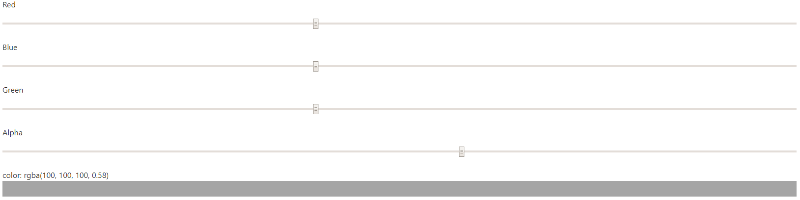

RGBA är en utvidgning av RGB färgvärden med en "alpha kanal", som specifierar färgens opacitet. Till skillnad från RGB så har RGBA inte stöd utav varenda webbläsare just nu,
men har stöd i de största webbläsarna: Chrome, Edge, Firefox, Safari och Opera. Syntaxen för RGBA är rgba(red, green, blue, alpha).
Exempel:
rgba(0, 0, 0, 0.3)
rgb(255, 0, 0, 0.3)
rgb(185, 90, 0, 0.3)
rgb(255, 255, 255, 0.3)
En HEX färgväljare kan se ut på detta vis:
